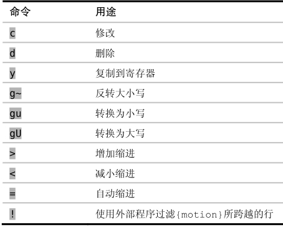

来查阅完整的列表，表2-1总结了一些比较常见的操作符。
来查阅完整的列表，表2-1总结了一些比较常见的操作符。技巧12双剑合璧，天下无敌
Vim的强大很大程度上源自操作符与动作命令相结合。在本节，我们将看到它是如何工作的，并考虑其寓义。
操作符 + 动作命令 = 操作
d{motion}命令可以对一个字符（dl）、一个完整单词（daw）或一整个段落（dap）进行操作，它作用的范围由动作命令决定。c{motion}、y{motion}以及其他一些命令也类似，它们被统称为操作符（operator）。你可以用:h operator:h aw来查阅完整的列表，表2-1总结了一些比较常见的操作符。
g~、gu和gU命令要用两次按键来调用，我们可以把上述命令中的g当做一个前缀字符，用以改变其后面的按键行为，进一步的讨论请参见本技巧最后的“结识操作符待决模式”部分。
操作符与动作命令的结合形成了一种语法。这种语法的第一条规则很简单，即一个操作由一个操作符，后面跟一个动作命令组成。学习新的动作命令及操作符，就像是在学习Vim的词汇一样。如果掌握了这一简单的语法规则，在词汇量增长时，就能表达更多的想法。
假如我们已经知道如何用daw删除一个单词，然后又学到gU命令（参见:h gU ）。它也是个操作符，所以我们可以用gUaw把当前单词转换成大写形式。如果我们的词汇进一步扩充，学会了作用于段落的ap动作命令，就会发现我们可以进行两个新的操作：用dap删除整个段落，或者用gUap把整段文字转换为大写。
Vim的语法只有一条额外规则，即当一个操作符命令被连续调用两次时，它会作用于当前行。所以dd删除当前行，而>>缩进当前行。gU命令是一种特殊情况，我们既可以用gUgU，也可以用简化版的gUU来使它作用于当前行。
表 2-1 Vim的操作符命令

扩展命令组合的威力
使用Vim缺省的操作符和动作命令，我们能够执行的操作的数目是巨大的，然而，我们还可以通过自定义动作命令及操作符来进一步扩充其数目。让我们想想这寓示着什么。
自定义操作符与已有动作命令协同工作
随同Vim发布的标准操作符集合相对比较少，但我们可以定义新的操作符。Tim Pope的commentary.vim插件提供了一个很好的例子(2)，此插件为Vim所支持的编程语言增添了注释及取消注释的命令。
注释命令以\\{motion}触发，它会切换指定行的注释状态。它是一个操作符命令，因此可以把它和所有动作命令结合在一起。\\ap将切换当前段落的注释状态，\\G会把从当前行到文件结尾间的所有内容注释掉，而\\\则注释当前行。
如果你对如何创建自定义操作符感到好奇，可以先阅读一下文档: h :map-operator 。
自定义动作命令与已有操作符协同工作
Vim缺省的动作命令集已经相当全面了，但是我们还是可以定义新的动作命令及文本对象来进一步增强它。
Kana Natsuno的textobj-entire插件是一个很好的例子(3)，它为Vim增加了两种新的文本对象ie和ae，它们作用于整个文件。
如果想用=命令自动缩进整个文件，我们可以执行gg=G（就是说，先用gg跳到文件开头，然后用=G自动缩进从光标位置到文件结尾的所有内容）。但是如果我们安装了textobj-entire插件的话，简单地执行=ae就可以了。运行这条命令时光标在哪儿并不重要，因为它总是作用于整个文件。
注意：如果我们同时安装了commentary和textobj-entire插件，就可以把它们放在一起使用。例如，执行\\ae会切换整个文件的注释状态。
如果你对如何创建自定义动作命令感到好奇，可以由阅读:h omap-info:h aw开始。
结识操作符待决模式
普通、插入及可视模式很容易辨识，但是Vim还有另外一些很容易被忽视的模式，操作符待决模式（Operator-Pending mode）就是一个例子。每天我们无数次地使用它，但通常它只持续不到一秒时间。举个例子，在我们执行命令dw时，就会激活该模式。这一模式只在按d及w键之间的短暂时间间隔内存在，一眨眼工夫就不见了。
如果我们把Vim想象成有限状态机，那么操作符待决模式就是一个只接受动作命令的状态。这个状态在我们调用操作符时被激活，然后什么也不做，直到我们提供了一个动作命令，完成整个操作。当操作符待决模式被激活时，我们可以像平常一样按<Esc>中止该操作，返回到普通模式。
很多命令都由两个或更多的按键来调用（查阅:h g 、:h z 、:h ctrl-w
，或者 :h [，可以看到一些例子），但在多数情况下，头一个按键只是第二个按键的前缀。这些命令不会激活操作符待决模式，相反，可以把它们当成命名空间（namespace），用来扩充可用命令的数目。只有操作符才会激活操作符待决模式。
你也许想知道，为什么要有一个完整的模式，专门用于操作符和动作命令之间的短暂瞬间，而命名空间命令则仅仅是普通模式的一个扩充？好问题！这是因为我们能够创建自定义映射项来激活或终结操作符待决模式。换句话说，它允许我们创建自定义的操作符及动作命令，从而让我们可以扩充Vim的词汇。
(1) http://vimgolf.com/
(2) https://github.com/tpope/vim-commentary
(3) https://github.com/kana/vim-textobj-entire